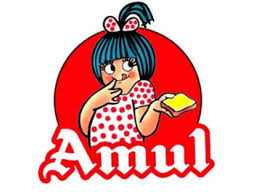
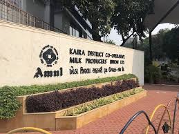
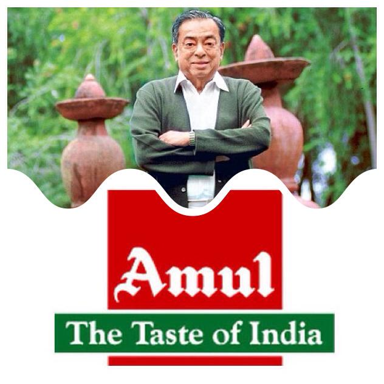
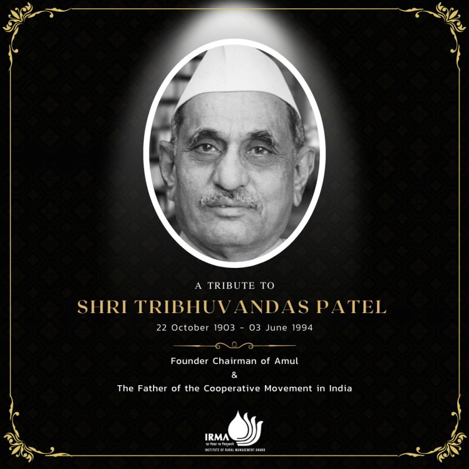

The Birth of Amul started with a protest only and then it became the lifeline of India. The origins of India's dairy revolution trace back to Anand, a town in Gujarat, where exploitative practices by a local milk trader led farmers to seek help from Sardar Vallabhbhai Patel. He advised them to eliminate middlemen and form a cooperative. In 1946, inspired by this vision and guided by leaders like Morarji Desai and Tribhuvandas Patel, farmers formed the Kaira District Co-operative Milk Producers’ Union Ltd.—starting with just two village societies and 247 litres of milk. This cooperative later became known as Amul Dairy. Under Tribhuvandas Patel’s leadership and with the professional management of Dr. Verghese Kurien, known as the father of white revolution from 1950, Amul grew rapidly. Recognizing its success, Prime Minister Lal Bahadur Shastri initiated a national dairy policy based on the Amul model.